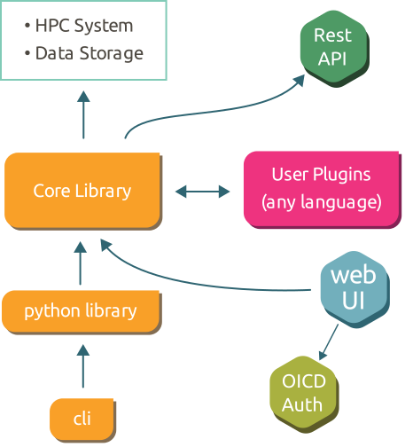
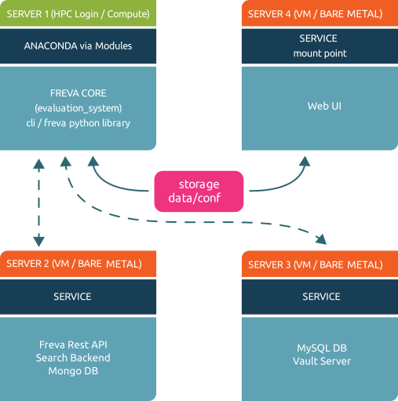
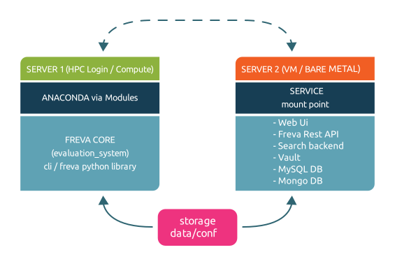
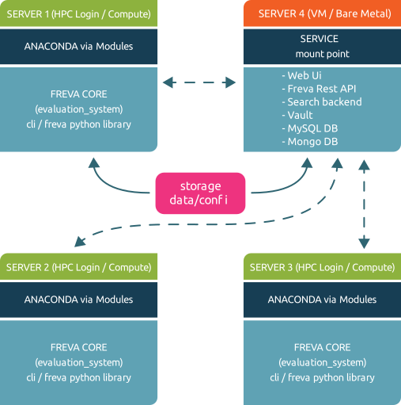

Freva Architecture#
The Free evaluation system framework (Freva) consists of three basic parts:
Freva rest API service that handles request to the data search engine and database.
Command line interface and a python client as user interface for the freva rest API.
Services, such as a apache solr data search service, MySQL database, and web service providing a web-based user interface (web ui) to the core library
Command line interface, python client and web ui make use of the core library, the core library on the other hand makes use of the services. This hierachy is outlined in the figure below:
Overview#

Core library and command line interface:#
The core library client (evaluation_system) and the command line interface (cli) are
installed within the conda-forge environments. Conda-forge has the advantage
that it comes with its own python distribution and hence any python instance
can be made independent of the host system. The disadvantage is that it
occupies a relatively large amount space in small files.
The latter fact is can be disadvantageous for distributed file systems.
Services:#
As already mentioned the evaluation system framework needs multiple micro-services to function:
Apache solr for search and indexing data
MySQL DB for creating plugin history entries
MongoDB to save user search statistics
Redis Caching server used as a broker (optional)
Data-loader service that provisions any kind of data (netCDF, HDF5, grib etc) on the HPC file system as zarr-stream via http/https
Vault server to securely store and provide passwords for the services.
The above mentioned services can be deployed in docker/podman containers or in conda-forge environments. Container conda-forge based deployment strategies were chosen over the direct installation on the host system, such as a Virtual Machine (VM) or a bare machine because OS specifications that are determined by the container setup make a configuration of the service system agnostic - e.i. no specifications of the host OS - such as SELinux - has to be taken into account.
Web based user interface#
Like the services the web ui is also deployed either in a container or a conda-forge environment.
Again we’ve chosen this approach for host OS independent configuration reasons. Because the each scientific project that deploys its own instance of the evaluation system framework comes with a unique stack of data and data analysis plugins the web ui must reflect this project specific configuration. For this reason it is essential that the command line interface - typically installed on a HPC login node - and the web ui share a common central configuration file. A setup that uses two independent instances of a configuration - one for the cli and one for the web ui - is not favourable as configuration setups might diverge over time. Therefore we decided the cli configuration on a HPC login node to be the master configuration. Which means that the web ui will also has to have access to this configuration files. If the web ui service is not running on the same machine the cli instance is running on - which should be usually the case - the location of the configuration has to be made available via a mount to the machine where this web ui container is running on. This can usually be achieved by mounting the content via a network based file system, such as nfs, or a cluster file system such as gpfs to the web ui machine.
Note
The web ui contains of three different parts: a django web application that runs the web sites code, a redis server acting as database cache and a nginx httpd reverse proxy server forwarding client requests to the django web application.
Setups#
The next sections propose various deployment strategies for the framework:
One service one machine set up:#

One service one machine: Every service is installed on a dedicated machine
This setup deploys the cli on a central instance and the services on dedicated machines (VM or bare metal). We recommend this setup since it minimises the load on each host machine and minimises failure due to load issues. In a typical scenario the core configuration stored in a central location is made accessible to the machine hosting the web ui container. The cli also connects and communicates to machines hosting the apache solr and mariadb containers. The vault server will always be running on the same machine that hosts the mariadb service.
All services on one machine set up:#

All services on one machine: All services are installed on the same machine
This setup deploys the cli on a central instance and all services on one single machine (VM or bare metal). While this set up might be prone to load failure unless enough resources a allocated to the machine, it is probably most simple to administer since all services are running on one entry point.
Multi-cli setup:#

Multi-cli: The command line interface and core library are installed on many compute nodes
Distributed file systems, such as gpfs or lustre, can be slow - therefore it is recommend to NOT deploy the conda-forge environments for cli and core library on such file systems. The above above mentioned anaconda setup creates a considerable amount of small files, which has performance penalties on distributed file systems. Therefore it is recommended to deploy the core library and the cli via a cluster of machines.